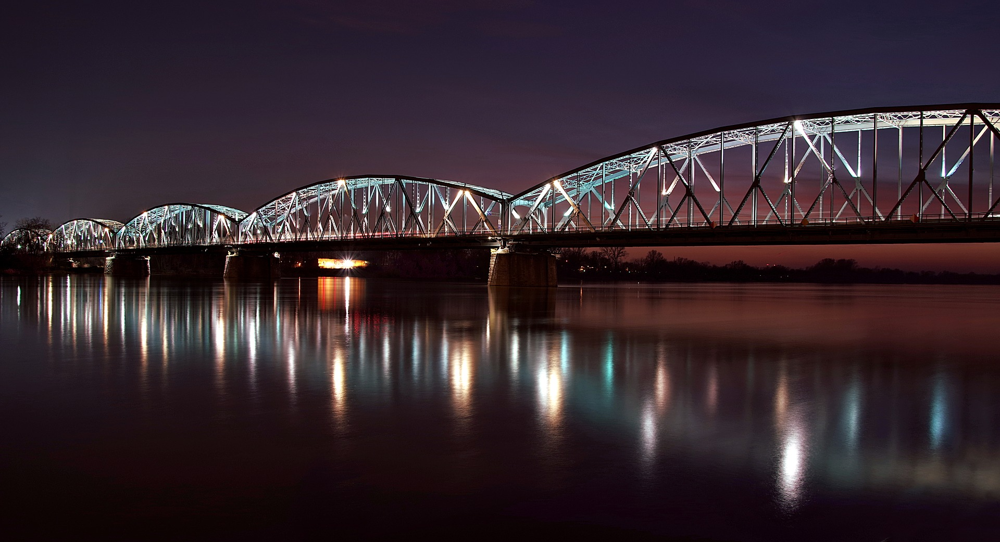

a
Toruń
-To miasto leżące nad Wisłą.
Stare Miasto
-Stare Miasto w Toruniu znajduje się na Światowej Liście Dziedzictwa Kultury UNESCO. To najlepiej zachowane, pod względem liczby zabytków, średniowieczne miasto. Do dziś dnia przetrwało wiele średniowiecznych budowli, a zachowane w Toruniu domy mieszkalne stanowią największy i najlepiej zachowany zespół gotyckiej architektury mieszkalnej w Europie Północnej.
-Niezwykły jest Ratusz Staromiejski, który powstał pod koniec XV wieku, a jego wieża jest najwyższą i najstarszą więżą tego typu w Europie Środkowo-Wschodniej. Liczy 730 lat. Miejska legend mówi, że ratusz miał symbolizować kalendarz. Jedna wielka wieża symbolizowała jeden rok, cztery wieżyczki
–cztery pory roku. W środku urządzono dwanaście wielkich sal, które miały symbolizować dwanaście miesięcy, a pięćdziesiąt dwa mniejsze pomieszczenia
–tygodnie w roku. Ratusz miał mieć trzysta sześćdziesiąt pięć okien i drzwi. Ale że rok, co cztery lata jest przestępny, to jedno okno zamurowywano, co cztery lata, choć pojawiają się głosy, że przez cztery lata w roku nie można było go po prostu otwierać.
Krzywa Wieża
-Wieża była jedną z kilkudziesięciu baszt murów obronnych Torunia. Brak pionu, mimo krążących legend, w rzeczywistości wynikł najprawdopodobniej z osunięcia się podłoża. To osunięcie okazało się niezłym sukcesem, ponieważ Krzywa Wieża jest jednym z najczęściej fotografowanych w Toruniu miejsc.
-Krąży też legenda, że grzesznik nigdy nie będzie w stanie utrzymać równowagi, opierając się plecami o ścianę wieży i się przewróci. Jedynie człowiek prawy jest w stanie przejść test i zachować równowagę. Większość turystów zostaje poddana temu testowi.
_2010-07-17_026.jpg )